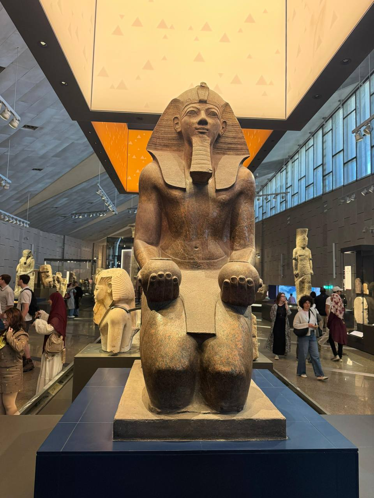

The burial mask that became the face of ancient Egypt
This mask of solid gold is one of the most famous objects in the world — the death mask of the boy king Tutankhamun, who ruled Egypt over 3,300 years ago.
Crafted from two layers of high-karat gold and inlaid with lapis lazuli, carnelian, obsidian, and coloured glass, the mask was placed directly over the face of the king's mummified body. Its weight of more than 10 kilograms of gold speaks to the wealth of the New Kingdom at the height of its power.
The headdress is the striped nemes worn only by pharaohs, flanked by a vulture goddess Nekhbet and a cobra goddess Wadjet — the protective deities of Upper and Lower Egypt. The false beard, braided and curled, symbolizes the king's divine status, while the broad collar is composed of twelve rows of semi-precious stones.
Discovered by British archaeologist Howard Carter in 1922 inside the nearly untouched tomb KV62 in the Valley of the Kings, the mask has since become the most recognizable artifact from ancient Egypt — a symbol of pharaonic power, craftsmanship, and the timeless mystery of Tutankhamun himself.
Everywhere the glint of gold.
— Howard Carter, on entering the tomb, 1922